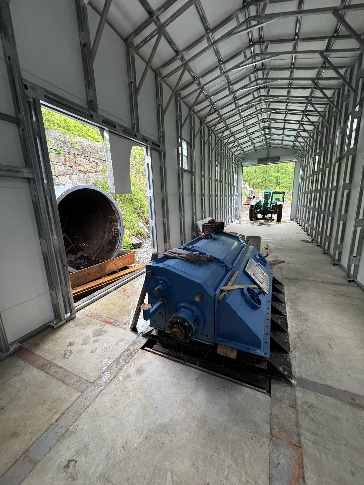
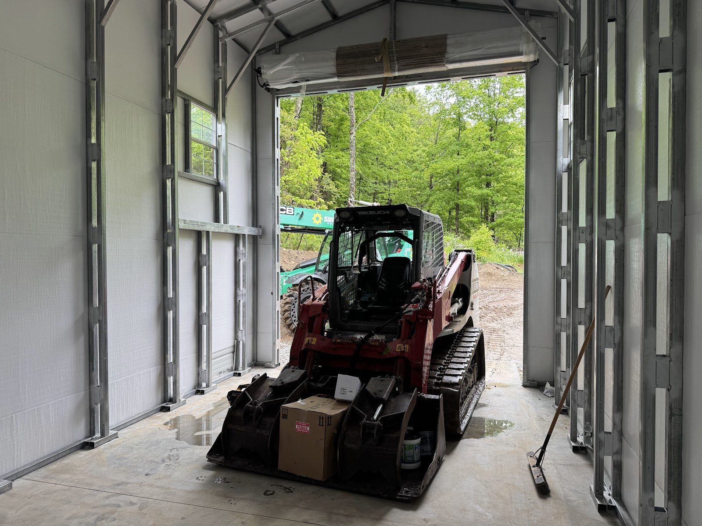
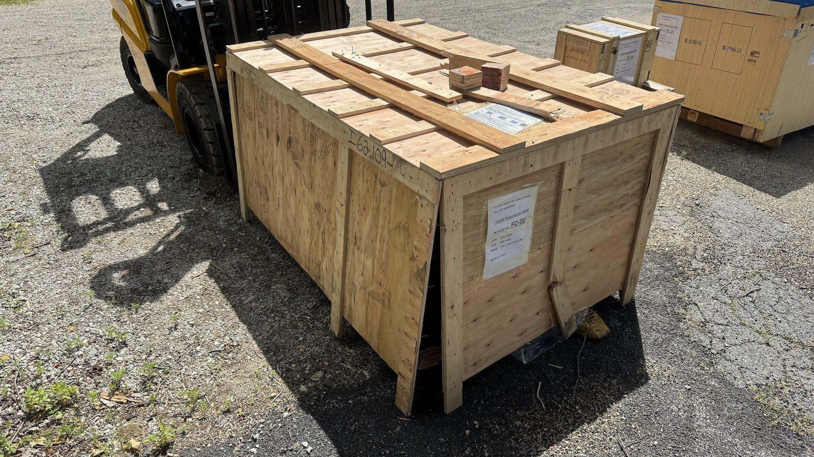
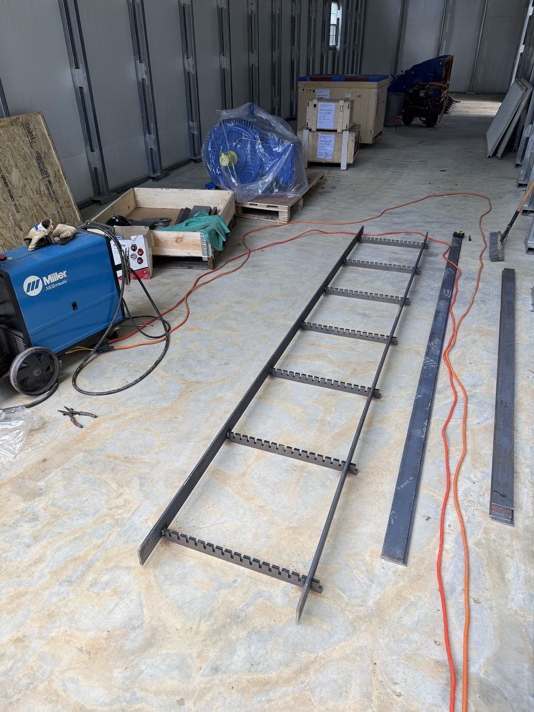
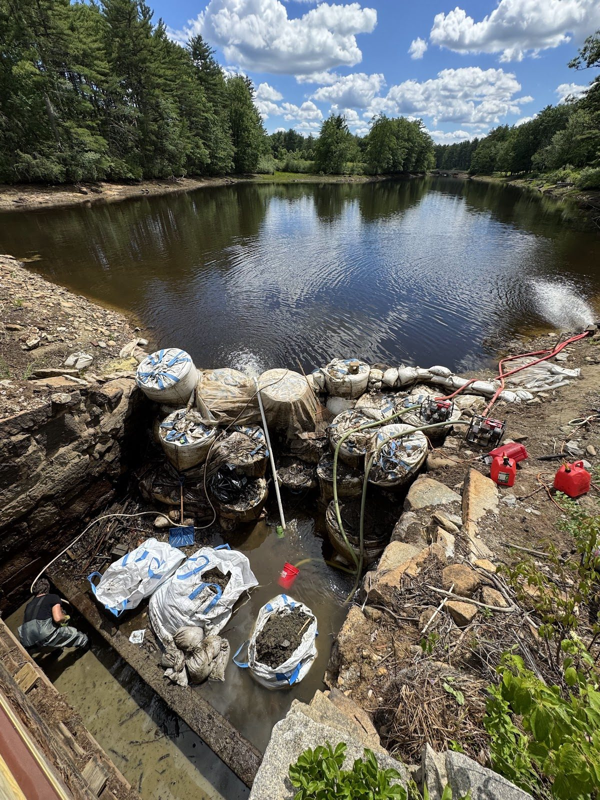

Steel Shell Up, Generator Delivered

Promised you a happier post. Here it is — the site looks more like a power plant today than it has at any point in this project.
The new pumphouse steel shell is up. After a year of foundations, steel design, and renders, there is now an actual building standing over the water passages — framed, sheeted, and changing the whole character of the site. Where last summer there was a hole full of coffer dam and mud, there's now a structure you could point to from across the pond and say: that's where the power comes from.







And the building didn't stay empty long. This month we took delivery of the new generator and gearbox — the last two major pieces of the drivetrain. Turbine (installed last summer) spins gearbox spins generator: the complete mechanical path from falling water to electric power is now on the property.
Meanwhile, the penstock rehab continues to earn its place on the schedule. Peeling back the layers of rust deposits inside the tube revealed pressure leaks — water finding its way into the penstock from around the headgate and penstock exterior. It's the kind of discovery you can only make from the inside, and it's far better to find it now than under operating pressure. The leak paths are being addressed as part of the rehab.
The remaining season is all about the intake: coffer dam restoration, the new trash rack system, the rebuilt headgate, and — the milestone everyone around the pond is waiting for — the end of the drawdown.